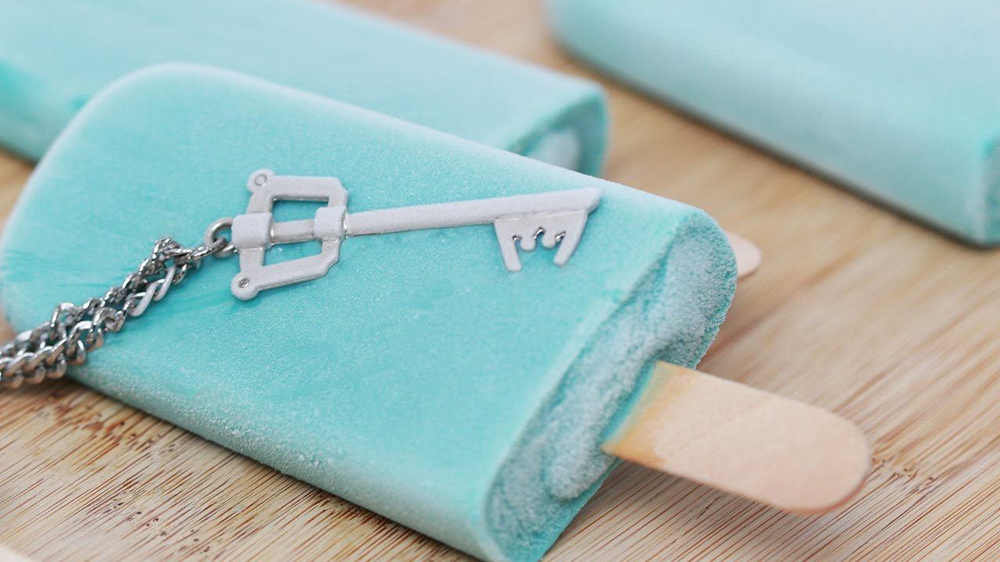

Home
Sea Salt Ice Cream

Description:
If you’re a Kingdom Hearts 2 player, you're probably curious about the sea
salt ice cream that Axel, Roxas, and Xion eat in the game. If you want to
know what it tastes like, you can easily recreate the recipe at home and
enjoy sea salt ice with your friends in just a few hours!
The recipe works best if you use an ice cream maker, but if you don’t have
one, don’t worry—you can still make sea salt ice cream without it.
Ingredients:
- 2 Eggs, separated
- 2 cups (470 ml) of Milk
- 1/3 cup (67 g) of White Granulated Sugar
- 1 tsp (4.9 ml) of Vanilla
- 1 cup (240 ml) of Heavy Whipping Cream
- 1 tsp (4.2 g) of Sea Salt
- 12 drops of Blue Food Coloring
- 3 drops of Green Food Coloring
Steps:
-
1. Separate the eggs into 2 separate bowls. Crack each egg, 1 at a time,
and separate the whites from the yolks. Put the yolks in 1 bowl, and the
whites in another bowl.
-
2. Beat the egg whites until they’re stiff. Use an electric mixer or
stand mixer set on a low speed for the best results. Keep beating the
egg whites until they form stiff peaks, which usually takes about 5
minutes. You can use a whisk to beat the egg whites manually if you
don’t have a mixer, but it will take a little more effort and elbow
grease! Once the egg whites are stiff, set the bowl aside.
-
3. Mix 1/3 cup (67 g) of sugar with the egg yolks. Measure out the white
granulated sugar and dump it into the bowl with the egg yolks. Stir the
ingredients together until they’re fully incorporated.
-
4. Heat 2 cups (470 ml) of milk in a pot or saucepan until it simmers.
Measure out the milk and pour it into a small pot or saucepan. Place the
pot or saucepan on your stovetop and heat the milk over medium heat.
Stir the mixture occasionally as you bring it to a simmer.
-
5. Pour the heated milk into the yolk and sugar mixture. Remove the milk
from the heat once it starts to simmer. Use a pot holder to carefully
transfer the hot milk to the bowl with the yolks and white sugar. Stir
the ingredients until they’re fully combined.
-
6. Return the milk mixture to the pot and heat it until it thickens.
Pour the milk mixture back into your pot or saucepan. Turn the heat to
medium and let the mixture cook until it takes on a thick, custard-like
texture. This should only take a few minutes. Don't let the mixture come
to a boil or the eggs will scramble!
-
7. Stir the thickened mixture into the bowl of egg whites. Use a pot
holder to lift the pot or saucepan off the stove and carefully pour the
hot, thick mixture into the bowl of stiff egg whites. Stir the mixture
well with a wooden spoon to incorporate the ingredients.
-
8. Stir about 1 teaspoon (4.2 g) of sea salt into the mixture. You can
adjust the amount of sea salt according to your personal tastes, but 1
teaspoon (4.2 g) will give you a nice balance of sweet and salty
flavors. Be careful not to over-salt the mixture. Use sea salt for this
recipe. Regular table salt won’t give you the results you want.
-
9. Cover and chill the mixture in the fridge for about 30 minutes.
Stretch plastic wrap over the mouth of the bowl to cover the mixture.
Place the covered bowl in your refrigerator for about half an hour to
chill the mixture.
-
10. Stir the heavy whipping cream and vanilla into the chilled mixture.
Take out the bowl and uncover it. Measure out 1 cup (240 ml) of heavy
whipping cream and 1 teaspoon (4.9 ml) of vanilla and dump them into the
cooled mixture. Stir the mixture thoroughly with a spatula.
-
11. Add the blue and green food coloring. To give the sea salt ice cream
its signature color, add 12 drops of blue and 3 drops of green food
coloring to the mixture. Fold the food coloring into the mixture and
stir the ingredients until the texture and color are consistent. You can
adjust the number of drops for each color to customize the hue.
-
12. Pour the mixture into your ice cream maker and freeze it. Transfer
the mixture to your ice cream maker and place it in the freezer. Follow
your ice cream maker's instructions for freezing. Let the mixture freeze
completely. If you don't have an ice cream maker, pour the mixture into
metal cake pans and put them in the freezer. When the edges get firm,
remove the mixture and stir it. Repeat this several times until the
mixture is uniformly frozen.
-
13. Transfer the mixture to molds and freeze the popsicles for 2 hours.
You don’t have to do this, but if you want to recreate the look from the
game, use ice pop molds. Place popsicle sticks into the molds and fill
them with the mixture. Freeze the ice pops for 2-3 hours and enjoy! If
you can wait, it's best to freeze the ice cream overnight before eating
it.